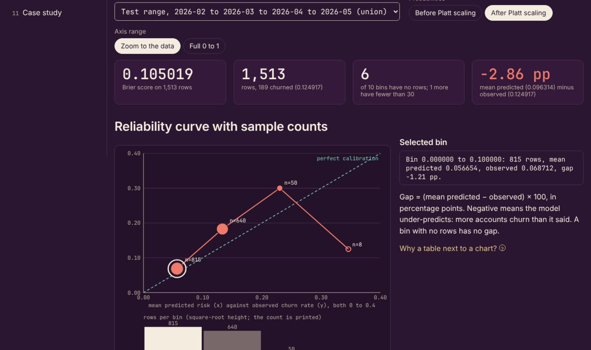
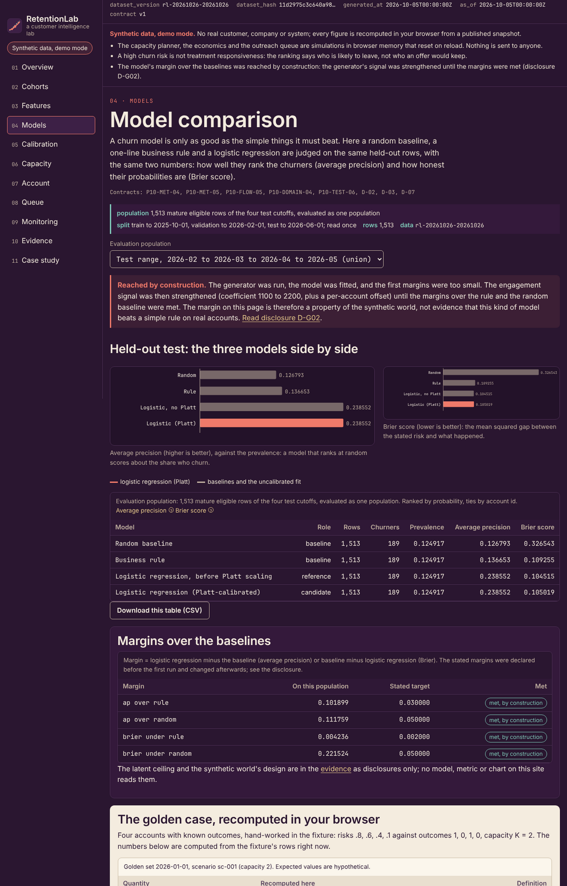
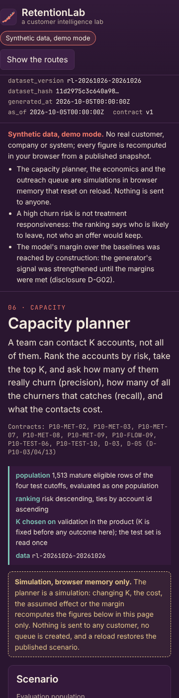

Dashboard · Data science · Churn and calibration · FastAPI · React · 2026-10
Which Accounts Deserve Limited Retention Attention Under Uncertain Intervention Value?
RetentionLab: a churn-risk laboratory where the evaluation is honest before the model is clever. Features are built point in time on both the event and its arrival instant, labels are censored rather than assumed, splits are chronological with the label window and the account purged, preprocessing and calibration are fitted on the rows they may see, a logistic regression is compared with a random and a rule baseline, and a ranking by risk is never read as a treatment effect. The known answer: four accounts with risks .8, .6, .4 and .1 and outcomes 1, 0, 1, 0 give precision .5 and recall .5 at a capacity of two and a Brier score of .1925, and the selection alone supplies no estimate of what an intervention would do. Synthetic data; project 10 of the Business Data Lab.

- Problem
- The churn model looks excellent and is useless. The cancellation reason sits among its features; an event that arrived after the cutoff was used as if known; the same account appears in…
- Role
- Built and written by Rishit Raj Mathur; the case study names its sources and checks.
- Tools
- Python 3.11 (deterministic fitting whose outputs are frozen as decimal strings; every metric exact on the frozen values), PostgreSQL 16 (append-only events and predictions, feature availability proven by trigger, a scored run frozen), FastAPI 0.162 (commands with idempotency keys, 401/403/409/422 contracts; the outreach queue is draft only), SQL reference recomputation of the ranking, calibration and economics metrics, TypeScript + React 18 + Vite, Playwright 1.55 (journey, 4 widths, 200% zoom), GitHub Actions (postgres:16 service, hosted runners only), 383 Python tests (342 of the application, 41 of the artifact package), 3,197 TypeScript golden and snapshot checks plus 95 review checks over 31 worlds, 90 browser tests
- Status
- Case study with a live demo
- Evidence
- Open RetentionLab · Code on GitHub

Everything is synthetic: the 2,400 accounts, their events, the one training run and every figure come from a seeded generator whose designed relationships and twelve injected defects are published in an injection manifest, together with the choices its author made after seeing earlier draws. The most important of those is stated on every page: the model's margin over the random and rule baselines was reached by construction, because the engagement signal in the generator was strengthened until the stated margins were met, so the margin is a property of the synthetic world and not evidence that this kind of model beats a simple rule on real accounts. The other disclosed choices are lowered hazard intercepts and a smaller starter repricing uplift, a drift change moved and narrowed, a late-cancellation share raised, a relaxed late-arrival target, injected late events allowed in any split range, one revision of the scenario assumptions, a cohort enlarged for the size cap, and account split roles assigned by a hash of the id so that the group purge does not remove almost every earlier row. The published files hold the complete records of a 200-account cohort plus the full-world test table and per-cutoff aggregates; the latent churn propensity lives only in the manifest and no feature or metric reads it. The public site is a static demo over that snapshot; the capacity planner, the economics and the outreach queue simulate their actions in browser memory, and nothing is sent to anyone. The transactional behaviour (building point-in-time features, defining labels, splitting, fitting preprocessing, training, calibrating, scoring, prioritising a draft queue, simulating the economics, monitoring a refresh) is verified separately on GitHub-hosted runners against a transient PostgreSQL. Built from a written specification by a coordinating session delegating bounded work to implementation subagents; not a measurement of any real customer base, and no retention improvement is claimed.
01The problem
The churn model looks excellent and is useless. The cancellation reason sits among its features; an event that arrived after the cutoff was used as if known; the same account appears in training and test; label windows straddle the split; the scaler was fitted on everything; the threshold was tuned on the test set; accounts whose outcome is not yet known were labelled as retained; a column of the generator's own truth leaked in; the top of the risk list was treated as the list of customers an offer would save; and the capacity exceeded the eligible population.
RetentionLab measures the model as a decision aid: point-in-time features with both instants, censored labels excluded from every evaluation, chronological splits with purges and their dropped counts shown, preprocessing and calibration fitted only where allowed, precision and recall at the capacity actually available, a reliability curve with its sample counts, a Brier score on one population, risk lift that is explicitly not uplift, and an expected intervention value labelled hypothetical until a randomised experiment says otherwise.
02What I built
Two implementations of one contract, checked against a hand calculation and each other.
- The contract: a feature at a cutoff using only events whose event and availability instants both precede it, with a registry that refuses post-outcome, latent-truth and identifier-derived fields; a label from a cancellation inside a fixed 90-day horizon with a 14-day grace, mature only when the grace has passed and censored otherwise; chronological train, validation and test ranges with a label-window purge and a group purge so no account sits on both sides of a boundary; preprocessing fitted on training rows only; a seeded random baseline, a prevalence-constant baseline, a business rule and a logistic regression fitted by deterministic gradient descent with every coefficient and probability frozen as a six-place decimal; Platt calibration fitted on validation and judged on test; precision and recall at a capacity that cannot exceed the population; average precision in the scikit-learn step form; the Brier score; calibration gaps per bin with counts; risk lift at K as a ranking statistic; feature missingness by month; population drift as a stability index with a diagnostic threshold; scoring freshness apart from data freshness; a contact budget; and an expected intervention value that multiplies risk by an assumed share removed and a margin, labelled hypothetical.
- A known-answer fixture written first: four mature eligible accounts with frozen risks .8, .6, .4 and .1 and outcomes 1, 0, 1, 0 give churn 0.500000, precision and recall 0.500000 at K = 2, average precision 5/6 = 0.833333, Brier 0.192500 and risk lift 1.000000; a contact budget of 10.00 and an expected value of 8.45 labelled hypothetical; one event that occurred before the cutoff but arrived after it, counted and excluded; a fully censored February cohort whose ranking metrics are null; a chronological split of 27 rows with its dropped counts by reason; missingness, drift and calibration bins with counts; plus a rejected variant (18 rejected rows and 9 refused requests: a cancellation reason as a feature, a latent-truth column, an identifier feature, a preprocessing fit on validation rows, a calibration judged on its own rows, a threshold chosen on test, a censored row labelled retained, a capacity above the population) and an empty variant. A standard-library script reproduces all 1,823 checks from the records.
- The Python domain, PostgreSQL schema and FastAPI commands: build point-in-time features, define labels, split, fit preprocessing, train the baselines, calibrate, score, prioritise a draft queue, simulate the economics and monitor a refresh; 383 tests on a GitHub-hosted runner (342 of the application and 41 of the analyst artifact package) against PostgreSQL 16 including the twelve adversarial scenarios of the specification detected and recovered, deterministic fitting that is byte-stable across runs, and an independent SQL recomputation that agrees with the domain on the fixtures and a fitted world.
- The static site: the same contract in TypeScript with rational arithmetic only, a retention overview with the churn definition and censored counts, a cohort explorer, feature evidence with arrived-late counts, model comparison on the held-out test, the calibration lab with bin counts, the capacity planner, an account explanation without causal claims, the draft outreach queue, monitoring, evidence and the case study; 3,197 golden and snapshot checks against the Python domain (the cohort per model, the test table per population and model, the calibration gaps, the stability index by region and every designed-relationship figure), 95 review-finding checks over 31 hand-worked worlds, and 90 Playwright tests (including a contrast check on every route and a word-break check on the model card) at four widths and 200% zoom.
- A deterministic synthetic world: 2,400 accounts created over thirty months across four plans and five regions, monthly prediction cutoffs from 2025-01 to 2026-09 with a 90-day horizon and a 14-day grace, subscription, billing, usage and support events that each carry the instant they became available, a latent churn propensity kept only in the manifest, one training run with a chronological split and its purge counts, frozen predictions from a random baseline, a business rule and a Platt-calibrated logistic regression, three intervention scenarios and draft queues, with five designed relationships (a model that beats the baselines by construction, a plan with a calibration gap from an unobserved repricing, a region whose usage drifts after a logging change, late arrivals that would flip features if ignored, a sizeable censored tail) and twelve injected defects (a cancellation reason offered as a feature, an event arriving after the cutoff, an account repeated across splits, a label window crossing a boundary, preprocessing fitted on all rows, a threshold chosen on test, immature rows labelled retained, a latent-truth column, risk read as responsiveness, a capacity above the population, calibration judged on its own rows, an identifier feature) published with how each must be handled.
03How it was built
- 01
The known answer before any volume
Four accounts ranked by predicted risk .8, .6, .4, .1 with outcomes 1, 0, 1, 0. With capacity for two, the top two hold one true churner: precision 1/2 and recall 1/2. The Brier score is (.04 + .36 + .36 + .01)/4 = .1925. A standard-library script reproduces every figure, including the step-wise average precision of 5/6, from the records before the application exists.
- 02
Point in time means both instants
A feature may use an event only if it happened before the cutoff and had arrived before the cutoff. Events that arrived late are counted and excluded, and the maximum availability instant of every feature row is proven to precede the cutoff.
- 03
Risk is not responsiveness
The queue ranks accounts by risk under a capacity. The expected value of contacting them multiplies that risk by an assumed share removed and a margin, and the page calls it hypothetical: no treatment effect is estimated from the ranking, and the randomised experiment that could estimate one is designed separately.
- 04
Two modes, disclosed
Mode A is the backend on a GitHub-hosted runner with a transient PostgreSQL. Mode B is the public site over a published snapshot of frozen predictions; the capacity planner, the economics and the outreach queue simulate their actions in browser memory, and nothing is sent from them.
04Results
The model comparison on the synthetic snapshot (1,513 mature eligible test rows from four cutoffs, judged as one population; the by-construction note sits above the charts):

The capacity planner on a phone:

What the data supports. On the held-out test population of 1,513 rows from 442 accounts, 189 of them churning rows from 95 accounts (one cancellation can appear at up to three overlapping cutoffs, so the rows are correlated and no interval is given; prevalence 0.124917), the calibrated logistic regression reaches an average precision of 0.238552 and a Brier score of 0.105019, against 0.136653 and 0.109255 for the business rule and 0.126793 and 0.326543 for the random baseline. Every one of those margins is labelled met by construction, because the generator's signal was strengthened until they were; the Brier margin over the random baseline carries no information at all, since a uniform random probability cannot score better than about 0.33; the latent propensity the generator used scores 0.310365 on the same rows and appears only on the evidence page. Platt scaling made the model slightly worse on test (Brier 0.104515 before, 0.105019 after; overall gap −2.26 points before, −2.86 after), because all 289 calibration rows come from one validation cutoff after the purge removed the other three. The model under-predicts churn by 2.86 percentage points overall and by 8.07 points on the starter plan, where an unobserved repricing on 2026-02-01 raised churn that no feature sees; the largest gap of any group is the apac region at 10.68 points, a one-draw realisation that was not designed; six of the ten reliability bins hold no rows and the page says which. Usage in the apac region drifts after a change in how logins were recorded on 2026-03-31: the stability index is 0.513545 at 2026-05-01, peaks at 0.765053 in August and ends at 0.491035 in September, while the whole population reads 0.017043 at that cutoff and never exceeds 0.043730 over the series, so the pooled index would hide it; the same index also exceeds the 0.2 diagnostic in five of the thirteen months before the change, up to 0.679573, because the apac cohort of a few dozen rows sometimes has no rows in the lowest bin and the 0.0001 floor inflates the term, so the index is a diagnostic with false positives and the page says so. Of 9,039 eligible cutoff rows 3,594 (0.397610) are censored because their outcome window has not closed, and the mature churn rate is 0.104500; a reader who counted them as retained would see a falsely low rate on the last three cutoffs. Ignoring the arrival instant would change a feature on 11.57 percent of the test rows. The chronological split dropped 879 training rows whose label window crossed a boundary and 176 more whose account sits on the other side of one, leaving 1,088 retained training rows of which 744 were eligible and mature for fitting, and 289 validation rows from a single cutoff. At the 2026-09-01 cutoff the draft queue of the published scenarios gives hypothetical values of +21.38 at a capacity of five, −6.87 at ten and −95.46 at twenty on the published 97-account cohort (the full world of 1,241 scored accounts gives +81.13, +71.04 and −29.12), on an assumed effect that no experiment has measured. These are the generator's designed relationships and the one-draw realisation, published in its manifest and found by the site; they are not findings about any real customer base.
Found by review, then fixed. An independent reviewer, briefed to disprove the page, confirmed that a client-chosen future as-of on the metrics read turned censored rows into labelled ones (the golden cohort that is censored at server time reported a churn rate of 1.000000 at a 2027 as-of); that small chips and the case-study model card on the cream panels fell below the contrast threshold; that the model card broke words at 360 px; and that this page quoted the economics of the 97-account published cohort as if they were full-world figures, a stale test count, row counts presented as churner counts, a drift series without its false positives, and a calibration step that made the model worse without saying so. The reviewer also found that the specification's twelfth adversarial case (a model memorising the generator seed) had been implemented only as the refusal of seed-derived fields with no logged decision. All of it is fixed on the branch and live: a future as-of is refused and stored labels are authoritative; the panels meet the contrast threshold and a browser test now measures every route; the card stacks on narrow screens; every economics figure names its population and the full-world values are published beside the cohort's; a prevalence-constant baseline joins the comparison so the Brier margin has an honest reference, and the page says the margin over the random baseline is uninformative; the drift page prints the whole series with its false positives; the calibration page states the Platt effect; the decision on the twelfth case is logged and a check refits the model on permuted account identifiers and shuffled rows and gets byte-identical predictions. The reviewer's own probes agree with the fixed code; no figure of the logistic fit, the fixture or the world moved.
Not built yet: the randomised intervention experiment that could estimate a treatment effect, and cursors bound to the dataset version. The analyst package added after the review recomputes average precision and the stability index in SQL and reconciles 393 rows against the domain, the published files and a re-run of the whole world.
05What I'd do next
- Design the randomised intervention experiment and bind cursors to the dataset version.
- Add an SQL recomputation of average precision and the stability index, and a monitoring history.
- The ten projects of the lab share these gates.